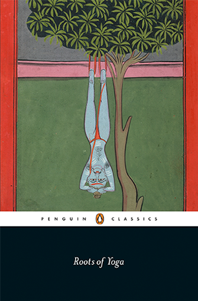

ROOTS OF YOGA.
A unique, single-volume sourcebook of yoga practice texts from the Indic traditions through the ages.
In spite of yoga’s now global popularity (or perhaps, rather, because of it), a clear understanding of its historical contexts in South Asia, and the range of practices that it includes, is often lacking. This has been at least partly due to limited access to textual material. A small canon of texts, which includes the Bhagavadgītā, Patañjali’s Yogasūtras, the Haṭhapradīpikā and some Upaniṣads may be studied within yoga teacher training programs, but by and large the wider textual sources are little known outside of specialised scholarship.
This book seeks to rectify that problem. The material is drawn from over a hundred texts, many of which are not well known, and which date from about 1000 BC to the nineteenth century CE: a period of almost three thousand years. Although most of the texts included here are in Sanskrit, there is also material from Tibetan, Arabic, Persian, Bengali, Tamil, Pali, Old Kashmiri, Old Marathi, Avadhi and Braj Bhasha (late-medieval precursors of Hindi), and English. This chronological and linguistic range reveals patterns and continuities that contribute to a better understanding of yoga’s development within and across practice traditions (for example between earlier Sanskrit sources and later vernacular or non-Indian texts which draw on them).
The eleven chapters in this book are arranged thematically to reflect important practices of yoga (e.g. posture, breath control, meditation) and the results of these practices (e.g. yogic powers, liberation). Still other chapters provide additional context for practice and its results (e.g. definitions of yoga, preliminaries, theories of the yogic body). A short introduction to each chapter provides an overview of the translated material and some historical contextualization.
The translations themselves are arranged in two different ways: in chapters which deal with relatively cohesive and well-defined topics (e.g. chapter three on posture, chapter five on yogic seals, chapter seven on mantra, and chapter nine on yogic powers) the selections progress in chronological order from beginning to end. In other cases, where the topic is broader or more disparate (e.g.), we have further divided the chapter into thematic sections, which are then in turn arranged chronologically.
A glossary of technical terms, a descriptive, historical chronology of the texts, and a detailed index provide further tools for navigating the material.
“Both Drs. James Mallinson and Mark Singleton are two leading Yoga researchers. In this momentous volume they have combined their expertise and scholarly talents to investigate this rich tradition. We can expect original ideas and substantial insights that will significantly advance this field of knowledge. I am very excited about this collaboration and have the highest expectations.”—Georg Feuerstein, Ph.D. Director of Research and Education – Traditional Yoga Studies. Author of Dictionary of Yoga and Tantra, The Bhagavad-Gita: A New Translation, The Yoga Tradition.
Published January 2017 by Penguin Classics.
ORDER